Data & results
The measured input composition and the resolved mechanical output.


L = φ·ψ — log–log joint plot with constant-product diagonals and
marginal IQR boxplots per species.The full figure library behind the project — method and pipeline flows, the constitutive / UMAT algorithms, PDE numerics, fracture and boundary conditions, verification, and the data & stress results. Click any figure to open it full size.
The measured input composition and the resolved mechanical output.
L = φ·ψ — log–log joint plot with constant-product diagonals and
marginal IQR boxplots per species.How composition and calibration turn into a finite-element stress prediction.

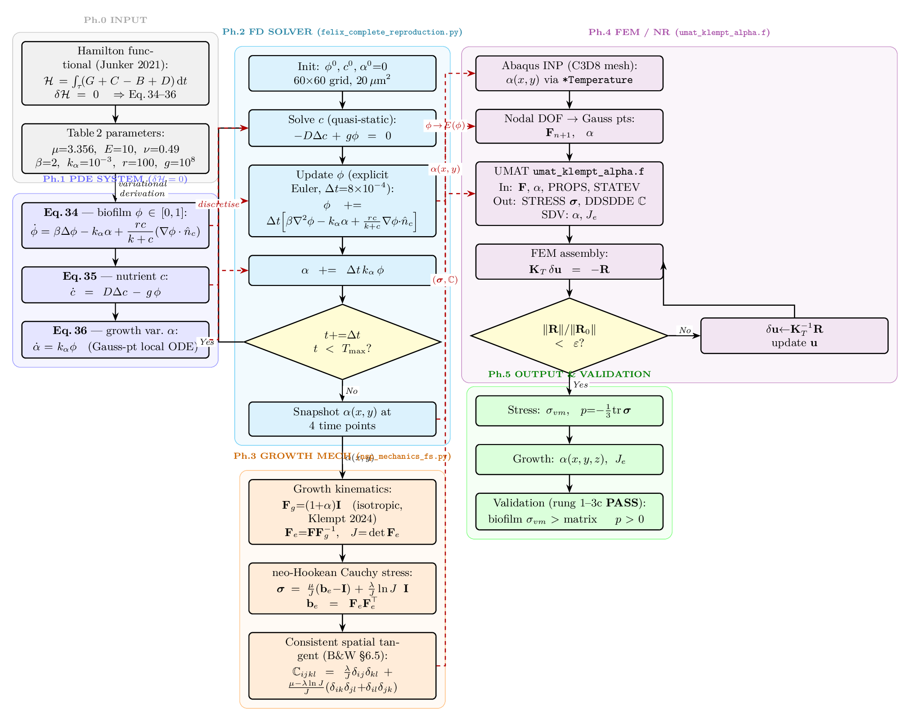
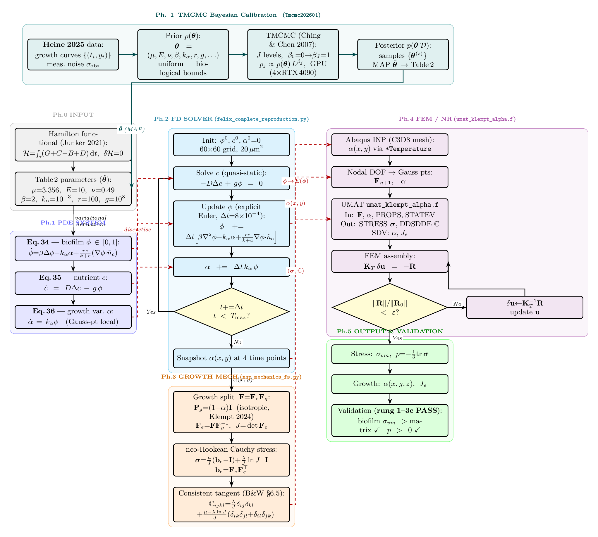
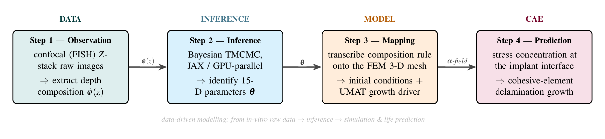
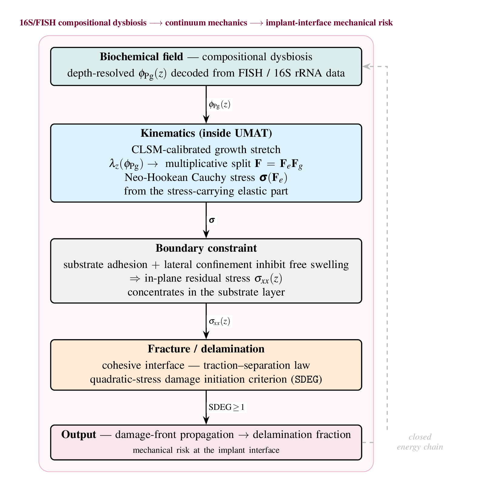

The growth / viscoelastic material law and its subroutine implementations.

F = Fe·Fg
with isotropic growth Fg = (1+α)I.
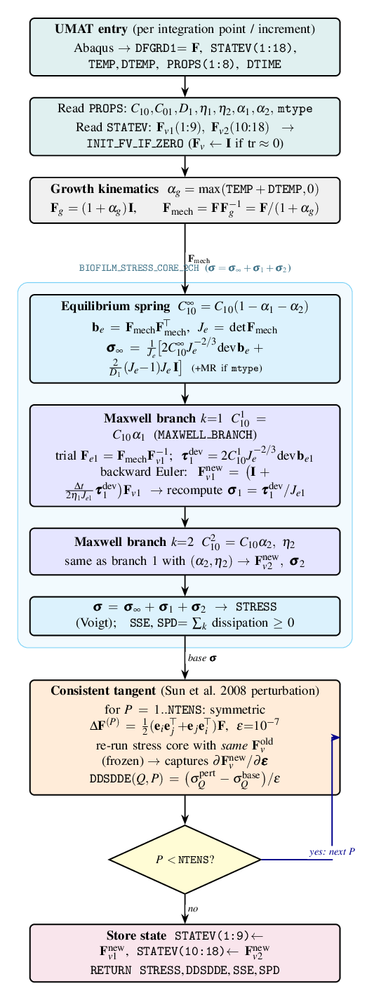
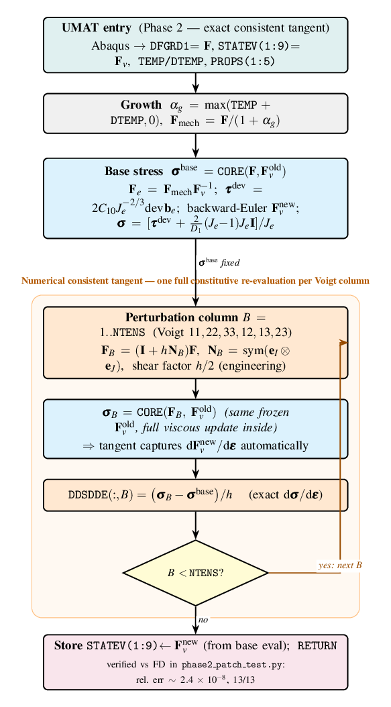
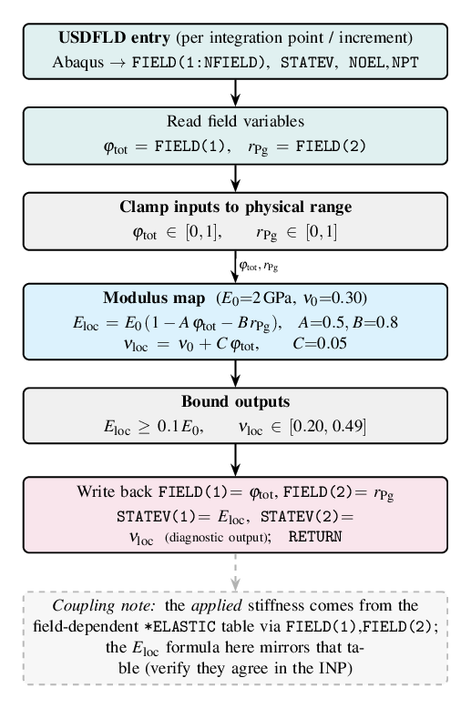
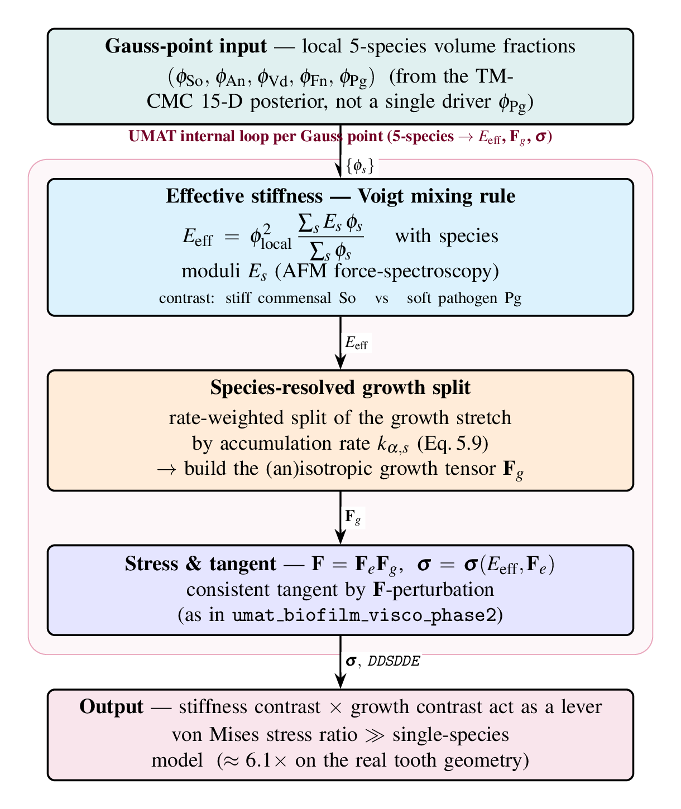
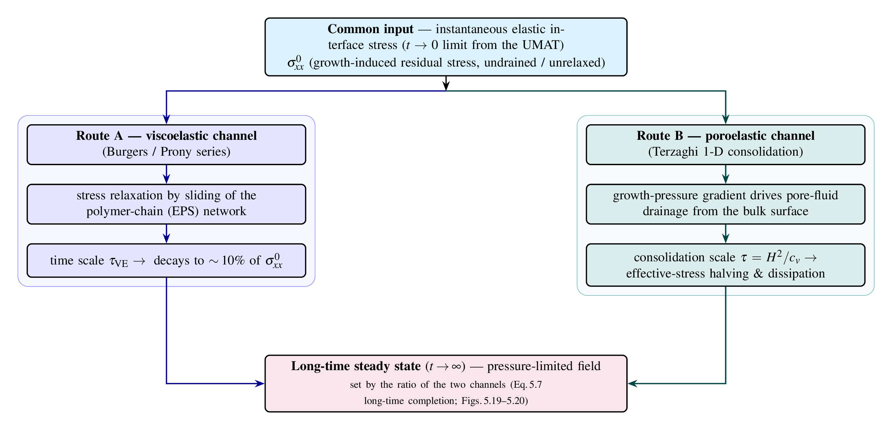
The reaction–diffusion growth model and how it is discretised and solved.
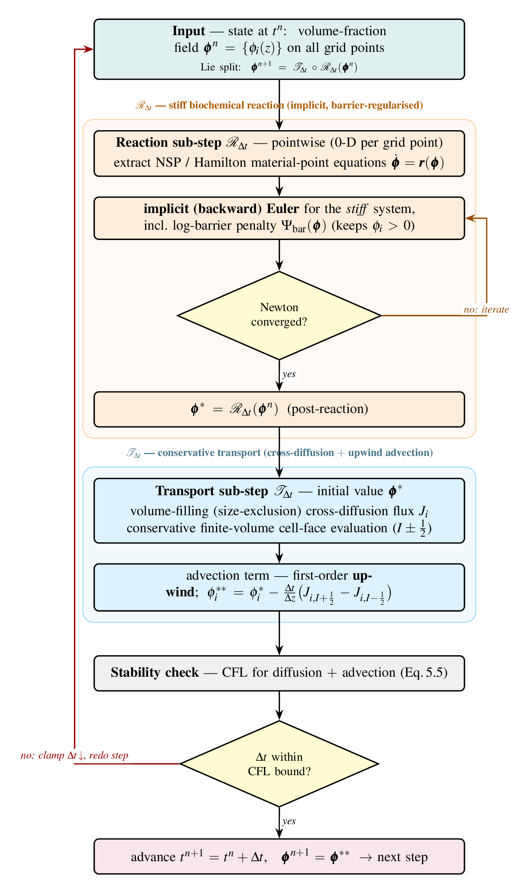
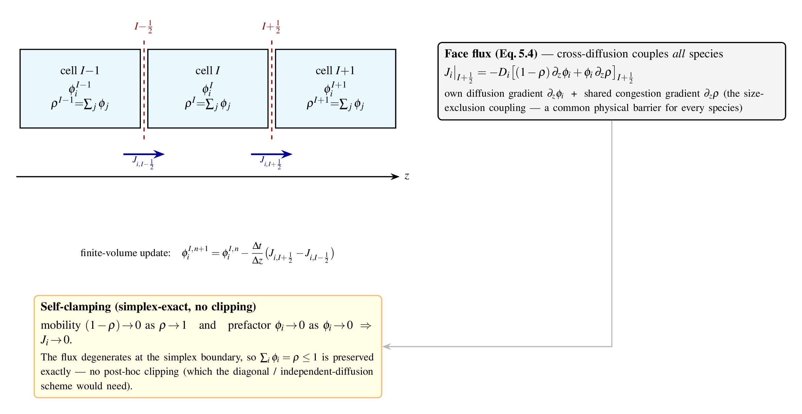
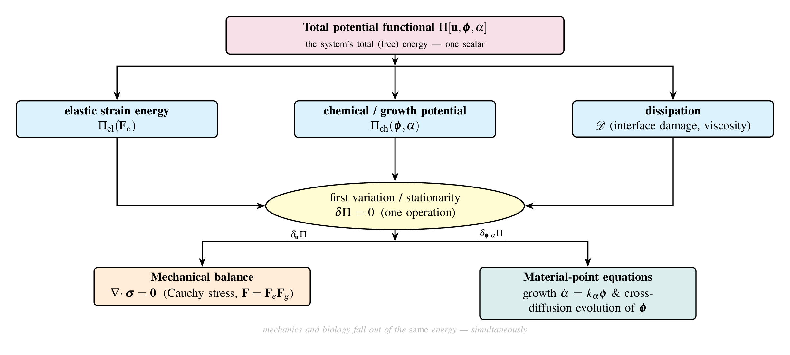
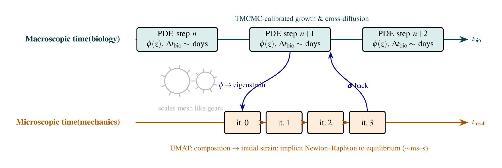
Interface debonding and the domain's mechanical boundary treatment.
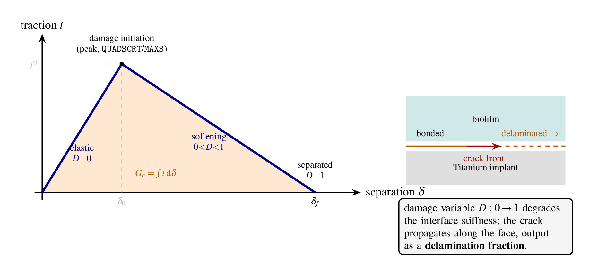
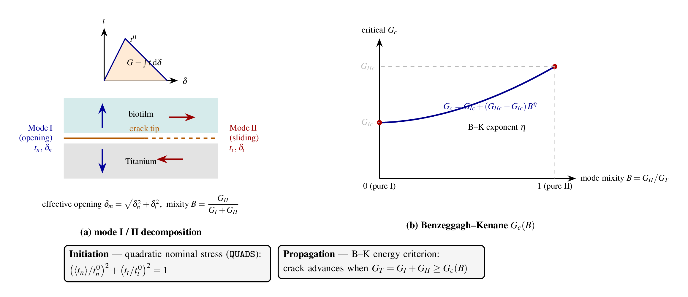
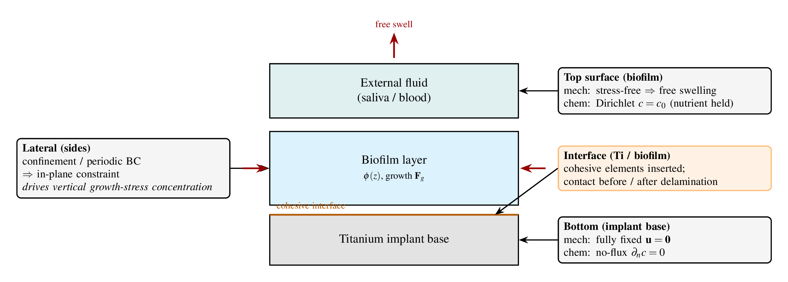
How correctness is established from unit checks up to the stress prediction.

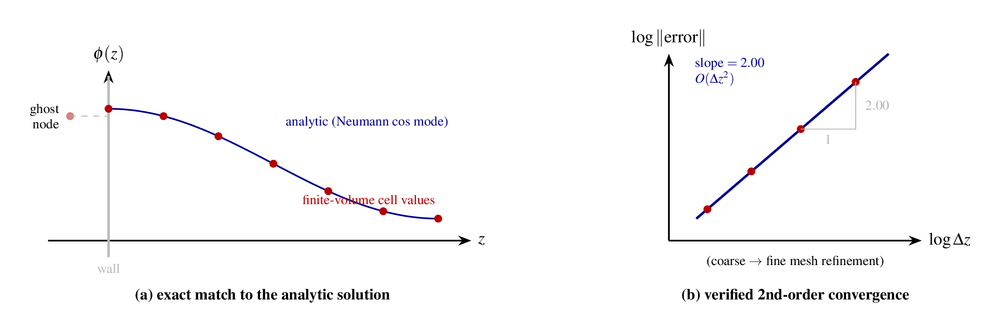